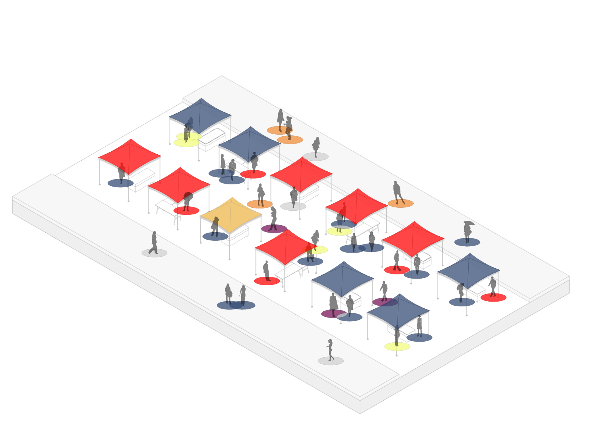
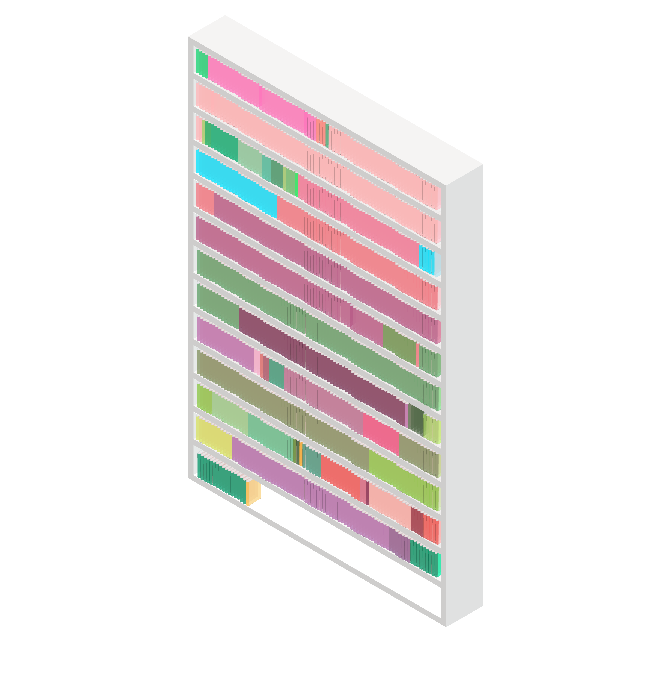
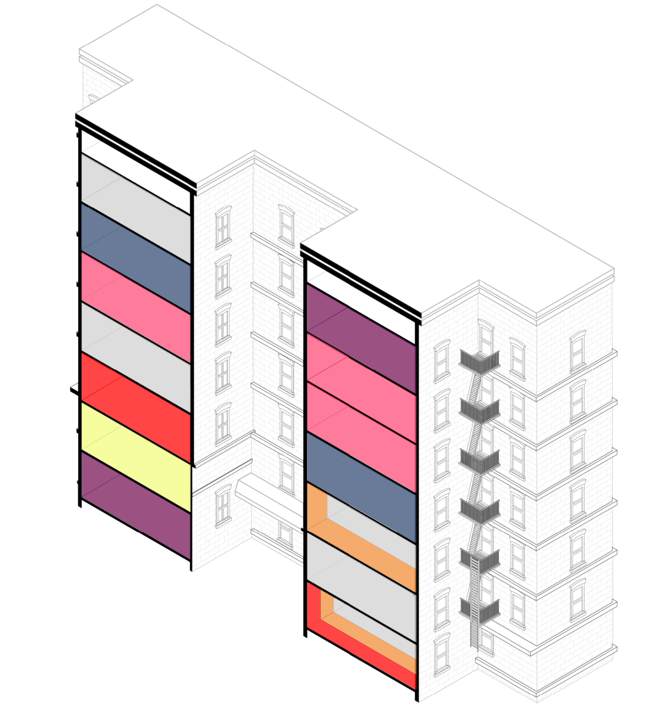
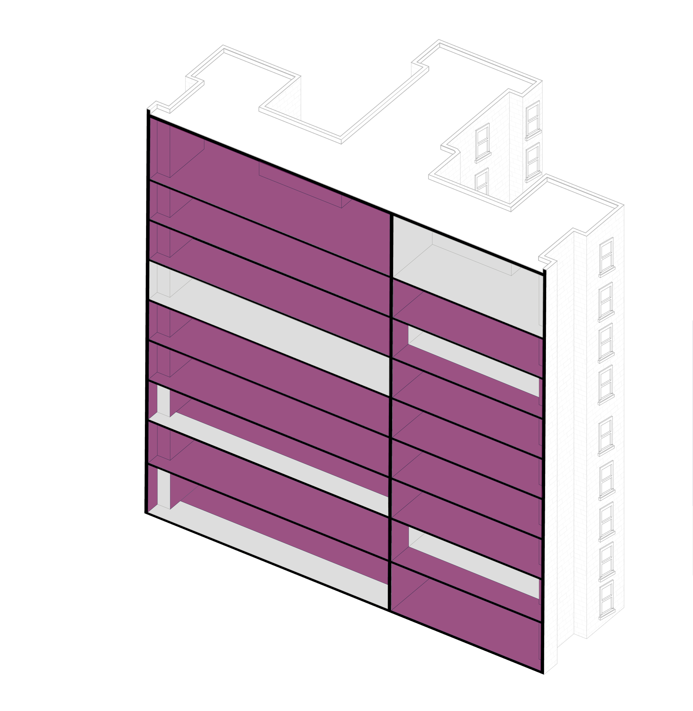
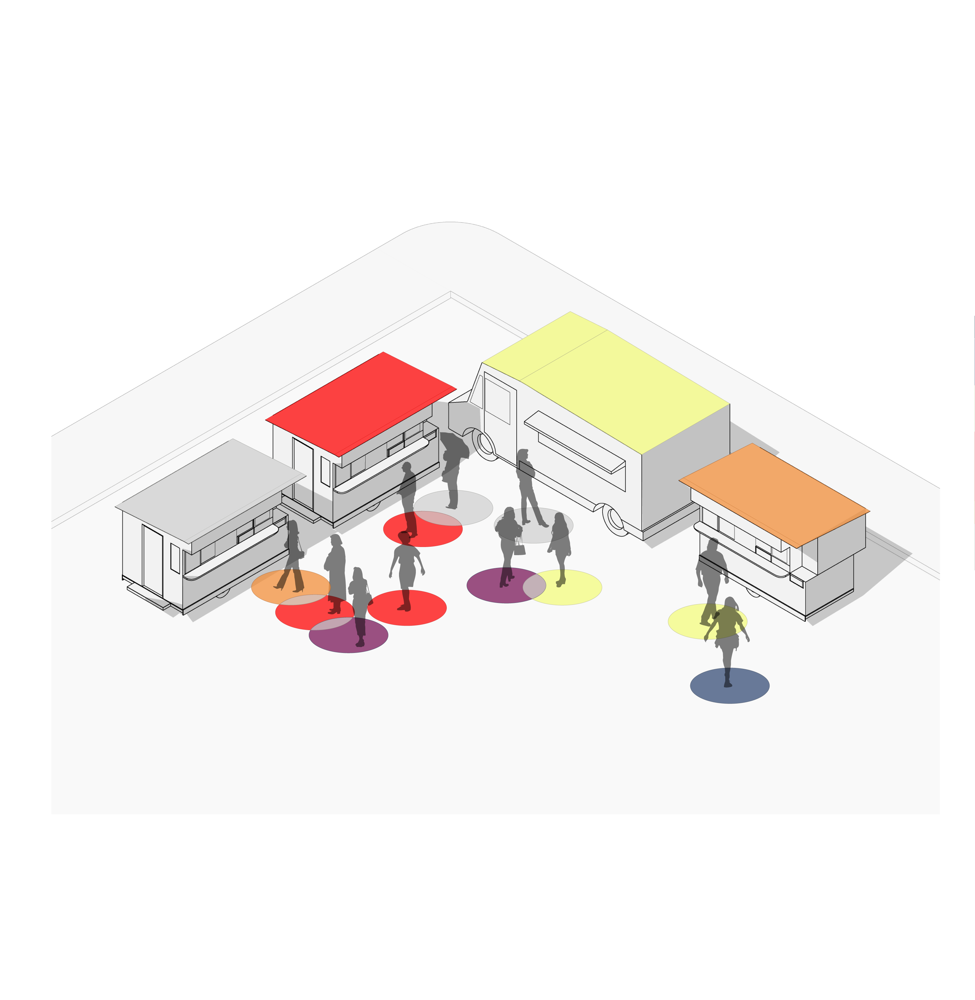

Beyond the Enclave:
 Introduction
IntroductionLanguage practices in the city are often imagined and depicted as being situated wholly within ethnic enclaves, neighborhoods defined by the immigrant community that live there
1
. In this model, one crosses a street and is suddenly transported to a "Little Pakistan" or a "Korea Town." But the realities of language in an urban setting are much more complicated and nuanced. Of course, such enclaves do exist, where people of similar backgrounds live together - sharing language, food, religion. But this model is over simplified: neither are the "Littles" and the "Towns" so homogenous nor is the rest of the city devoid of members of non-dominant languages or identities. Rather, multilingualism is woven into the fabric of contemporary urban life. 
Language arrangements at a Street Festival
Beyond the Enclave: Languages of New York seeks to uncover that multilingualism. By taking an intimate look at the ways that people perform their languages both in public and in private, this project presents a taxonomy of language arrangements in New York City. Drawing on ethnographic field work exploring language practices in apartment complexes, street festivals, and food trucks as well as quantitative datasets, the project presents intimate look at the textured landscape of language in an urban context.
But presenting a deeply qualitative view of language presents certain challenges, as does quantifying and visualizing such qualitative information. Therefore the purpose of this Case Study is two fold. First, it attempts to examine how languages are live together in a city – which has revealed the limitations of the enclave model. Second, it aims to explore how to visually represent the ephemeral and abstract relationship between language use and urban environments.
Data
The data for the project is partially quantitative, partially anecdotal. A comprehensive list of all non-English library holdings was generously provided by the Queens Public Library. The Queens Public Library has over 200 languages represented in their collection. This degree of diversity can be overwhelming, and ultimately, difficult to comprehend. Therefore, we treated this as three datasets. The first 5 languages (Chinese, Spanish, Korean, Russian, and French) were considered one dataset because there are disproportionately more materials in these languages than any other. The next 51 languages formed the second dataset because the library holds at least 50 items in each of these languages. The remaining 150 languages were treated as yet another, and not included in the visualization since most of these languages are represented by fewer than 10, and sometimes only one or two items in a collection of over half a million non-English items.
Materials in the "middle" 51 languages come from across the world.
The languages represented in the apartment buildings and street festival were determined by ethnographic methods. The apartment builds represent two buildings in New York City. Research assistants collected the data by asking neighbors what languages they speak and why they decided to move into the building. The languages represented in the street festival and in the food trucks were determined by participant observation. These were both altered slightly to represent a typical street festival, though it is, in actuality, a mixture of two different events.
Privacy and Data
In any qualitative project, privacy is a central concern. While we wanted to accurately represent language dynamics in the city, we also needed to ensure that the buildings would not be recognizable. For this reason, one of the languages has been changed in the building, while still accurately representing the linguistic diversity. Secondly, the neighborhood where these building exist is not identified. By representing the buildings as prototypes, we hope to ensure privacy while still illustrating the highly multilingual environments New Yorkers create.
Languages spoken by residents of one building in New York City.
Design
The project depicts instances of language by showing the spaces in which they are spoken (or not spoken). The project uses the axonometric drawing – a key representational tool for architects – to create scenes and invite the imagination of the viewer.In the situations on the street, a person's native language is represented by a color, but the language they use in that interaction is represented in the overlap. The purpose of this visualization is to illustrate that though people bring their languages with them to every interaction, they may not always use all of their linguistic repertoire.
The bar chart beside each illustration quantifies the language information presented in the illustrated scene. By combining these two forms of visualization – the drawing and the bar chart – the project attempts to convey that the source data is anecdotal and qualitative rather than presenting it as static and quantitative.
A number of representational techniques, including maps, typological drawings, and filtering of data through language types were considered. Additionally, the idea that this visualization could both collect and display information influenced the design.
Findings
The Library
Since the 1970's, when the Queens Library established its New Americans program, it has served as a hub of access for materials and services in languages other than English. Today, over 200 languages are represented in its collection. Chinese, Korean, Russian, and Spanish are available at all of the branches, but library patrons have access to materials held by any branch. This range of languages makes the Queens Library the most linguistically diverse in the country, and likely the world.While visualizing the collection, we realized that the best way to illustrate this staggering diversity was to separate the languages one might assume are there (the top 5), from those that might get hidden, such as Malayalam (Kerala region of India), or Thai (Thailand). By organizing the data this way, we are able to acknowledge the presence of the largest languages while still showcasing the variety of languages available to patrons.
This collection provides an invaluable resource to Newcomers, Multilingual Immigrants, Heritage Speakers, Language Learners, and anyone with an interest in languages other than English. Furthermore, this collection offers a space and a place for meaningful language outside of the home. In this way, the Queens Public Library is a central player in the maintenance of smaller and less commonly spoken languages in New York City.
The Apartments

The building as a vertical enclave (Polish)
Language is a fundamental part of our lives and identities, and nowhere is this more readily apparent than in the organization of domestic life. This is underscored in how we officially record language use in the United States Census and American Community Survey: in these questionnaires, citizens and residents are asked "what language you speak at home (emphasis added). The parallels between home and language are embedded into our culture and language, as we talk about "mother tongues" and "home languages," we reinforce the domestic and intimate nature of our languages.
This depiction illustrates how language is centered around the home by providing a snapshot of two building types in New York City. The first is a hub of multilingualism (above), fondly called the "United Nations Building," to symbolize the diversity within its walls. This building contains a variety of unrelated languages. Though some apartments are connected through family relationships, most are not, and are simply multilingual New Yorkers living their lives. Though this type of building may be the exception rather than the norm, since more than half of all New Yorkers speak a language other than English at home, it is more common than one might think. This building illustrates that language is not something that exists in an enclave, separate from the city at large, but is lived by its speakers everyday, often in close proximity to others.
The second apartment building is, in essence, a micro-enclave. More of its residents speak Polish than English, though it is not located in what many would consider a "Polish speaking neighborhood." Because many of the residents of this building are connected through family or social networks, it functions as a microcosm: Neighbors share holidays and meals, traveling from apartment to apartment throughout the course of the year. This type of building helps to maintain the native language, offering a meaningful space to use the language with other native speakers. For another view of this type of arrangement, see 42-63 City Microcosm.
The Street

Representation of language at a gathering of food trucks.
In these situations, language is being performed on the street. In each arrangement, speakers are bringing their languages with them, but you may never know because most spearkers of languages other than English in New York City also speak English. As a result, if we do not share our language, we resort to the lingua franca. In this case, that is often English, but not always. For example, two West Africans may choose to speak in French, or two Latin Americans may choose Spanish. Just how people make this choice is complicated, and depends largely on a series of assumptions we make based on features, dress, body language, and other markers of identity and ethnicity. For more on that moment of interaction, visit Boundaries and Border Crossings: On Public Spanish in Washington Heights.
In a diasporic setting, events that are associated with ethnic groups, such as the Puerto Rican Day Parade or the Greek Festival are not as monocultural as they may initially appear. First, in a multicultural society, such events are often attended (and hosted) by many different people. Secondly, even among members of the highlighted ethnic group, culture is not honogenous, and languages and dialects can vary greatly between members. Finally, for each person, the languages they speak carry traces of the places they have lived and the relationships they have had, resulting in an idiolect (individual dialect) that is far from homogenous.
Similar dynamics are found at gatherings of street food vendors. Throughout New York City, food carts gather on busy streets and intersections, often representing a wide array of foods, cultures, and languages. Though these carts are sometimes operated by speakers of the language associated with the food, that is not a necessity. Many carts are owned by one person, operated by another, and neither person needs to have a connection to that food or language in order to work there. For more about the language dynamics behind Halal food in New York City, See Translating Halal.
Conclusion
In conclusion, the linguistic diversity of New York City is even greater than what initially meets the eye. Though the census only tracks 40 popular languages, there are anywhere from 200-800 spoken by its residents. There will never be enclaves to house all of these different languages, but you can still find them in apartments, on the street, and in the libraries. Project Team: Laura Kurgan, Michelle McSweeney, Tola Oniyangi, Carsten Rodin, and Dare Brawley Return to Case Studies